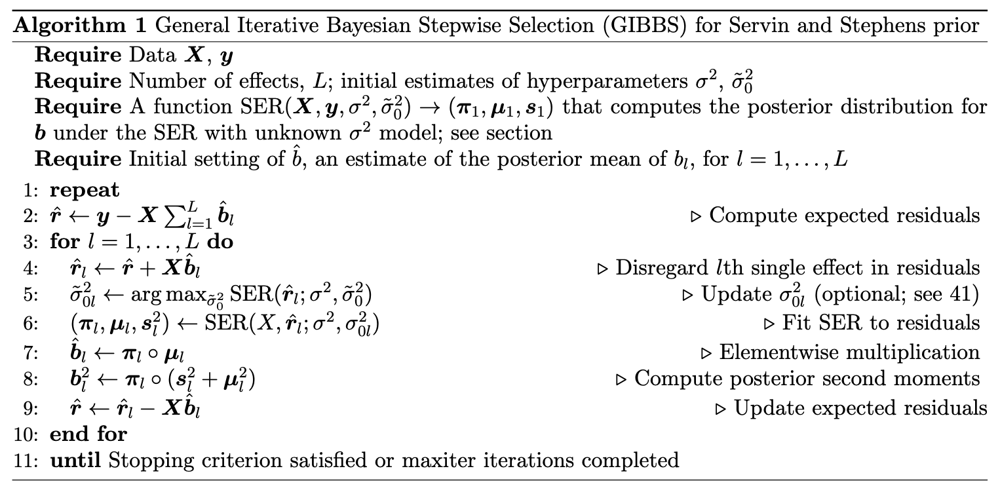

Reading note: Accounting for uncertainty in residual variances improves calibration for fine-mapping with small sample sizes
Accounting for uncertainty in residual variances improves calibration for fine-mapping with small sample sizes
William R.P. Denault, Peter Carbonetto, Ruixi Li, The Alzheimer’s Disease Functional Genomics Consortium, Gao Wang, Matthew Stephens
bioRxiv 2025.05.16.654543; doi: https://doi.org/10.1101/2025.05.16.654543
Highlights and Inovation
To address the limitation of the original SuSiE method: it can produces severely miscalibration CSs when applied to data sets with small sample sizes (\(n \leq 50\)).
Propose an augmented SuSiE method using an augmented SER singleton called “SS-SER” (“Sevin and Stephens”). The SS-SER model accounts for uncertainty in the residual variance by placing a conjugate inverse-gamma prior on it.
The corresponding modified IBSS algorithm is not guaranteed to exactly optimize a variational approximation to the posterior distribution, but still the empirical results show that in small sample studies it produces better CS calibration. The convergence criterion of the modified IBSS algorithm, called “General Iterative Bayesian Stepwise Selection (GIBSS)”, is the \(L2\)-norm of the difference of \((\boldsymbol{\pi}_1, \ldots, \boldsymbol{\pi}_L)\) between two consecutive iterations. Introduced below.
Methodology
SER accounting for uncertainty in residual variance estimates (SS-SER)
\[ \mathbf{y} = \mathbf{X} \boldsymbol{\beta} + \epsilon \]
\[ \boldsymbol{\beta} = \boldsymbol{\gamma}\beta \]
\[ \boldsymbol{\gamma} = \operatorname{Multinom}(1, \boldsymbol{\pi}) \]
\[ \epsilon \sim N(0, \sigma^2) \]
\[ \beta \sim N(0, \sigma_0^2 \sigma^2) \]
\(\sigma_0^2\): prior on the effect size relative to the residual variance.
\(\sigma^2\): variance of Gaussian noise. In the original SER/SuSiE, it was estimated by maximizing the likelihood or the ELBO.
The augmented SER model is to place a conjugate inverse-gamma prior on the residual variance:
\[ \sigma^2 \sim \operatorname{IG}\left(\frac{\kappa}{2}, \frac{\lambda}{2} \right). \]
- Servin and Stephens showed that this posterior distribution has a sensible limit as \(\kappa \rightarrow 0, \, \lambda \rightarrow 0\).
Derivation 1: univariate regression model
\[ \mathbf{y} = \mathbf{x} \beta + \epsilon \]
\[ \epsilon \sim N(0, \sigma^2) \]
\[ \beta \sim N(0, \sigma_0^2 \sigma^2) \]
\[ \sigma^2 \sim \operatorname{IG}\left(\kappa/2, \lambda/2 \right) \]
- The posterior distribution of \(\beta\) given \(\sigma^2, \sigma_0^2\):
\[ \beta \mid \mathbf{x,y}, \sigma^2, \sigma_0^2 \sim N(\mu_1, \sigma^2 s_1^2) \]
where
\[ s_1^2 = \frac{r_0^2}{\mathbf{x^\top x}}, \]
\[ \mu_1 = r_0^2 \hat{b}, \]
\[ r_0^2 := \frac{\sigma_0^2}{\sigma_0^2 + 1/(\mathbf{x^\top x})}. \]
That is,
\[ \sigma^2 s_1^2 = \frac{1}{(\mathbf{x^\top x})/\sigma^2 + 1/\sigma_0^2}. \]
- The posterior distribution of \(\sigma^2\):
\[ \sigma^2 \mid \mathbf{x,y}, \sigma_0^2 \sim \operatorname{IG}\left( \frac{\kappa_1}{2}, \frac{\lambda_1}{2} \right), \]
where
\[ \kappa_1 = \kappa + n, \, \lambda_1 = \lambda + \operatorname{RSS}(\sigma_0^2), \]
\[ \operatorname{RSS}(\sigma_0^2) := \mathbf{y^\top y} \left( 1 - r_0^2 \sigma_{xy}^2 \right), \]
\[ \sigma_{xy} = \frac{\mathbf{x^\top y}}{\sqrt{ (\mathbf{x^\top x}) (\mathbf{y^\top y}) }}. \]
- Thus, the posterior distribution of \(\boldsymbol{\beta}\) after integrating \(\sigma^2\):
\[ \beta \mid \mathbf{x, y}, \sigma_0^2 \sim t_{\kappa_1} \left( \mu_1, \frac{\lambda_1}{\kappa_1} s_1^2 \right). \]
- The Bayes factor (BF) for this model is given by
\[ \operatorname{BF} = \sqrt{1 - r_0^2} \times \left( \frac{\lambda_1}{\lambda + \mathbf{y^\top y}} \right)^{-\kappa_1/2}. \]
Derivation 2: Bayes factor and posterior distribution for SS-SER model
- The posterior distribution of \(\beta_j\) after integrating \(\sigma^2\):
\[ \beta_j \mid \mathbf{X, y}, \sigma_0^2 \sim (1 - \pi_{1j}) \delta_0 + \pi_{1j} t_{\kappa_{1j}} \left( \mu_{1j}, \frac{\lambda_{1j}}{\kappa_{1j}} s_{1j}^2 \right), \]
where \(\pi_{1j}\) is the posterior inclusion probability of \(\mathbf{x}_{.j}\), given by
\[ \pi_{1j} = \frac{\pi_j \operatorname{BF}_j}{\sum_{j'=1}^p \pi_{j'} \operatorname{BF}_{j'}}. \]
Derivation 3: Hyperparameters \(\sigma^2\) and \(\sigma_0^2\)
See paper.
Augmented SuSiE - General Iterative Bayesian Stepwise Selection (GIBSS)

GIBSS computes an approximate posterior distribution for each single-effect coefficient \(b_l\).
GIBSS is not proven to optimize a formal variational approximation of the posterior distribution of \(b\) under the Servin and Stephens prior.
Stopping criterion:
Either the maximum number of iterations is reached (set to 100 by default); or
A predefined stopping criterion is satisfied; in this case, the variation in the parameters \((\boldsymbol{\pi}_1, \ldots, \boldsymbol{\pi}_L)\) between consecutive iterations is sufficiently small, i.e.,
\[ \left\| (\boldsymbol{\pi}_1, \ldots, \boldsymbol{\pi}_L)^t - (\boldsymbol{\pi}_1, \ldots, \boldsymbol{\pi}_L)^{t+1} \right\|_2 < \varepsilon, \]
where \(\varepsilon\) is a small threshold.